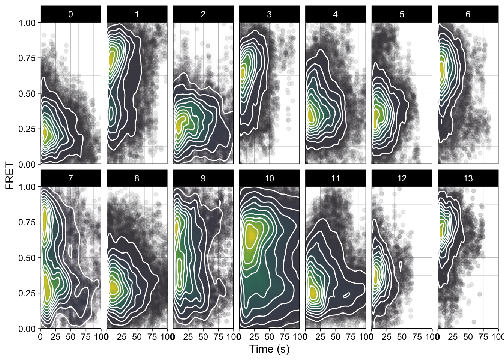
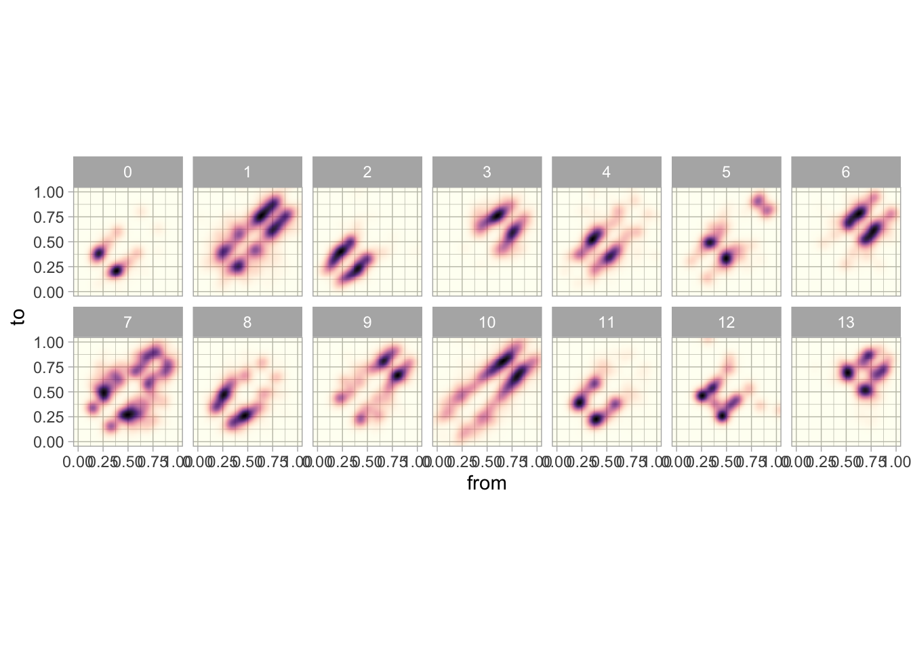

Looking at the Traces from Bishnu
Brady Johnston
2021-09-16
Last updated: 2021-09-30
Checks: 6 1
Knit directory: smfret/
This reproducible R Markdown analysis was created with workflowr (version 1.6.2). The Checks tab describes the reproducibility checks that were applied when the results were created. The Past versions tab lists the development history.
The R Markdown file has unstaged changes. To know which version of the R Markdown file created these results, you’ll want to first commit it to the Git repo. If you’re still working on the analysis, you can ignore this warning. When you’re finished, you can run wflow_publish to commit the R Markdown file and build the HTML.
Great job! The global environment was empty. Objects defined in the global environment can affect the analysis in your R Markdown file in unknown ways. For reproduciblity it’s best to always run the code in an empty environment.
The command set.seed(20210916) was run prior to running the code in the R Markdown file. Setting a seed ensures that any results that rely on randomness, e.g. subsampling or permutations, are reproducible.
Great job! Recording the operating system, R version, and package versions is critical for reproducibility.
Nice! There were no cached chunks for this analysis, so you can be confident that you successfully produced the results during this run.
Great job! Using relative paths to the files within your workflowr project makes it easier to run your code on other machines.
Great! You are using Git for version control. Tracking code development and connecting the code version to the results is critical for reproducibility.
The results in this page were generated with repository version e7a2b3d. See the Past versions tab to see a history of the changes made to the R Markdown and HTML files.
Note that you need to be careful to ensure that all relevant files for the analysis have been committed to Git prior to generating the results (you can use wflow_publish or wflow_git_commit). workflowr only checks the R Markdown file, but you know if there are other scripts or data files that it depends on. Below is the status of the Git repository when the results were generated:
Ignored files:
Ignored: .Rhistory
Ignored: .Rproj.user/
Ignored: analysis/figure/
Unstaged changes:
Modified: analysis/bishnu_new_traces.Rmd
Note that any generated files, e.g. HTML, png, CSS, etc., are not included in this status report because it is ok for generated content to have uncommitted changes.
These are the previous versions of the repository in which changes were made to the R Markdown (analysis/bishnu_new_traces.Rmd) and HTML (docs/bishnu_new_traces.html) files. If you’ve configured a remote Git repository (see ?wflow_git_remote), click on the hyperlinks in the table below to view the files as they were in that past version.
| File | Version | Author | Date | Message |
|---|---|---|---|---|
| Rmd | e7a2b3d | bradyajohnston | 2021-09-29 | processed majority of smFRET data and reproduced plots |
| html | e7a2b3d | bradyajohnston | 2021-09-29 | processed majority of smFRET data and reproduced plots |
| Rmd | 42f51e5 | bradyajohnston | 2021-09-16 | some initial plotting of smFRET results |
| html | 42f51e5 | bradyajohnston | 2021-09-16 | some initial plotting of smFRET results |
library(tidyverse)── Attaching packages ─────────────────────────────────────── tidyverse 1.3.1 ──✓ ggplot2 3.3.5 ✓ purrr 0.3.4
✓ tibble 3.1.4 ✓ dplyr 1.0.7
✓ tidyr 1.1.3 ✓ stringr 1.4.0
✓ readr 2.0.1 ✓ forcats 0.5.1── Conflicts ────────────────────────────────────────── tidyverse_conflicts() ──
x dplyr::filter() masks stats::filter()
x dplyr::lag() masks stats::lag()Introduction
Making a fret plotting function to check the data.
fl <- "~/Dropbox/BondLab/Data/smFRET/bishnu_brady_shared/1 nM/"
fretplot_function <- function(x) {
df <- read_table(x,
col_types = cols(),
col_names = c("frame", "don", "acc", "fret", "state"))
df <- df %>%
pivot_longer(cols = !contains("frame"))
signal_plot <- df %>%
filter(name %in% c("don", "acc")) %>%
ggplot(aes(frame, value, colour = name)) +
geom_line() +
theme_classic() +
labs(y = "Fluoroscent signal") +
guides(colour = "none") +
theme(axis.text.x = element_blank(),
axis.ticks.x = element_blank(),
axis.title.x = element_blank())
fret_plot <- df %>%
filter(!(name %in% c("don", "acc"))) %>%
ggplot(aes(frame, value, linetype = name)) +
geom_line() +
scale_y_continuous(breaks = 0:5*0.2) +
coord_cartesian(ylim = c(0,1)) +
labs(y = "FRET",
x = "Frame") +
theme_classic() +
scale_colour_manual(values = c("black", "midnightblue"))
final_plot <- patchwork::wrap_plots(signal_plot, fret_plot, ncol = 1)
final_plot
}Plot one of the .dat files.
list.files(fl, ".dat", full.names = TRUE)[3] %>% fretplot_function
| Version | Author | Date |
|---|---|---|
| 42f51e5 | bradyajohnston | 2021-09-16 |
Looks good, lets have a look what is in the merged files.
list.files(here::here(fl, "merged"), full.names = TRUE) %>%
.[1] %>%
fretplot_function()
| Version | Author | Date |
|---|---|---|
| 42f51e5 | bradyajohnston | 2021-09-16 |
Seems that they are just more of the same? Unsure what the difference between them are.
list.files(here::here(fl, "merged"), full.names = TRUE) %>%
.[100] %>%
fretplot_function()
| Version | Author | Date |
|---|---|---|
| 42f51e5 | bradyajohnston | 2021-09-16 |
Let’s try remaking some of the plots that bishnu sent through.
files <- list.files(here::here(fl, "merged"), full.names = TRUE)
read_all_frames <- function(files) {
lapply(seq_along(files), function(x) {
df <- read_table(files[x],
col_types = cols(),
col_names = c("frame", "don", "acc", "fret", "state"))
df$mol <- x
df
}) %>%
do.call(rbind, .) -> combined_mols
combined_mols
}
df <- read_all_frames(list.files(fl, full.names = TRUE, pattern = ".dat"))
df# A tibble: 27,215 × 6
frame don acc fret state mol
<dbl> <dbl> <dbl> <dbl> <dbl> <int>
1 1 2279. 793. 0.258 0.325 1
2 2 2142. 941. 0.305 0.325 1
3 3 1375. 684. 0.332 0.325 1
4 4 1481. 988. 0.400 0.431 1
5 5 1451. 1206. 0.454 0.431 1
6 6 1401. 1193. 0.460 0.431 1
7 7 1473. 1249. 0.459 0.431 1
8 8 1471. 1062. 0.419 0.431 1
9 9 1333. 1161. 0.466 0.431 1
10 10 1430. 1083. 0.431 0.431 1
# … with 27,205 more rowsLooking good, now to try and make the plots.
time_density_plot <- function(data) {
data %>%
filter(fret > 0, fret < 1) %>%
mutate(frame = frame / 5) %>%
ggplot(aes(frame, fret)) +
geom_point(alpha = 0.1, colour = "gray30") +
stat_density_2d(aes(fill = ..ndensity.., alpha = ..ndensity..),
geom = "raster",
n = 200,
contour = FALSE) +
geom_density_2d(bins = 10, colour = "white", contour_var = "ndensity") +
scale_fill_viridis_c(option = "D",
direction = 1,
limits = c(0.002, NA),
# trans = "log10",
na.value = NA) +
scale_alpha_continuous(range = c(0.01, 0.8)) +
coord_cartesian(ylim = c(0,1), xlim = c(0,100)) +
guides(alpha = "none",
fill = "none") +
# theme_light() +
theme_linedraw() +
labs(x = "Time (s)", y = "FRET") +
scale_x_continuous(expand = c(0,0)) +
scale_y_continuous(expand = c(0,0))
}plot_1nm <- df %>%
time_density_plot() +
labs(title = "1 nM Target")files_01 <-
list.files(
"~/Dropbox/BondLab/Data/smFRET/bishnu_brady_shared/100 pM_RNA1/",
pattern = ".dat",
full.names = TRUE
)
df_01 <- read_all_frames(files_01)
plot_1pm <- df_01 %>%
time_density_plot() +
labs(title = "100 pM Target")patchwork::wrap_plots(plot_1nm, plot_1pm)Warning: Removed 1248 rows containing missing values (geom_raster).Warning: Removed 8875 rows containing missing values (geom_raster).
Time-density plots for subpopulations of molecules.
| Version | Author | Date |
|---|---|---|
| e7a2b3d | bradyajohnston | 2021-09-29 |
It seems that the plots from Bishnu’s data can be replicated. Now I just need to do so with the the other traces to get a more complete picture.
Plotting the Static Experiments
Below is the FRET data from the static experiments, where the molecules were incubated with their RNA target for 15 minutes and then the movies were taken.
fl <- list.files(
"~/Dropbox/BondLab/Data/smFRET/bishnu_brady_shared/Bishnu/RNA1_target/",
full.names = TRUE,
pattern = ".dat"
)
read_fun <- function(file) {
some_list <- pbapply::pblapply(seq_along(file), function(x) {
df <- readr::read_table(file[x],
col_types = readr::cols(),
col_names = c("frame", "don", "acc", "fret", "state"))
df$id <- x
df
})
do.call(rbind, some_list)
}
df <- read_fun(fl)
df %>%
time_density_plot()Warning: Removed 9632 rows containing missing values (geom_raster).
| Version | Author | Date |
|---|---|---|
| e7a2b3d | bradyajohnston | 2021-09-29 |
Plotting the Live-Flow experiments.
This is the live-flow experiments, where the movies movies were recored, as the RNA was injected into the flow-cell to capture the live binding events of the proteins.
fl2 <- list.files(
"~/Dropbox/BondLab/Data/smFRET/bishnu_brady_shared/Bishnu/RNA1_target/liveflow_RNA1/",
full.names = TRUE
)
live_rna01 <- read_fun(fl2)
live_rna01 %>%
time_density_plot()Warning: Removed 7796 rows containing missing values (geom_raster).
| Version | Author | Date |
|---|---|---|
| e7a2b3d | bradyajohnston | 2021-09-29 |
Applying to all of the RNA
Need to apply this approach to all of the RNA to replicated all of their plots. To do that we’ll need to read in each of the sets of plots.
paths <- c(
"data/smfret-data/RNA0/rename_path",
"data/smfret-data/RNA1_target",
"data/smfret-data/RNA2",
"data/smfret-data/RNA3",
"data/smfret-data/RNA4",
"data/smfret-data/RNA5",
"data/smfret-data/RNA6",
"data/smfret-data/RNA7",
"data/smfret-data/RNA8",
"data/smfret-data/RNA9",
"data/smfret-data/RNA10",
"data/smfret-data/RNA11",
"data/smfret-data/RNA12",
"data/smfret-data/RNA13"
)
some_list <- pbapply::pblapply(seq_along(paths), \(x) {
df <- read_fun(list.files(paths[x], ".dat", full.names = TRUE))
df$rna <- x-1
df
})
df <- do.call(rbind, some_list)
df %>%
time_density_plot() +
facet_wrap(~rna)Warning: Removed 356784 rows containing missing values (geom_raster).
Now we have read all of it in, and are able to get time-density plots, lets try to replicate the transition-density plots (TDP). To achieve this, need to achieve this I need to classify the transitions myself.
# make the transitions df
trans <- df %>%
group_by(rna, id) %>%
mutate(
from = state,
to = lead(from), # get what the current state will transition to (next row)
new_state = lag(from) != from,
new_state = if_else(is.na(new_state), FALSE, new_state),
state_no = 1 + cumsum(new_state)
) %>%
group_by(rna, id, state_no) %>%
summarise(
frames = n(), # number of frames in this state
time = n() / 5, # numer of frames in seconds (frames = 0.2 s)
from = last(from), # get the last entry in from
to = last(to) # get the last entry in to
)`summarise()` has grouped output by 'rna', 'id'. You can override using the `.groups` argument.trans# A tibble: 11,258 × 7
# Groups: rna, id [1,316]
rna id state_no frames time from to
<dbl> <int> <dbl> <int> <dbl> <dbl> <dbl>
1 0 1 1 213 42.6 0.307 NA
2 0 2 1 1 0.2 0.353 0.187
3 0 2 2 5 1 0.187 0.353
4 0 2 3 10 2 0.353 0.187
5 0 2 4 97 19.4 0.187 0.353
6 0 2 5 5 1 0.353 0.187
7 0 2 6 34 6.8 0.187 0.353
8 0 2 7 12 2.4 0.353 0.187
9 0 2 8 4 0.8 0.187 0.353
10 0 2 9 15 3 0.353 0.187
# … with 11,248 more rowsTesting plotting of TDP
Replicate the transition-density plots with the code below.
trans %>%
# filter(rna == 1) %>%
filter(from > -0.2 & from < 1.2,
to > -0.2 & to < 1.2) %>%
ggplot(aes(from, to)) +
stat_density_2d(
aes(fill = ..ndensity..,
alpha = ..ndensity..),
geom = "raster",
n = 100,
contour = FALSE,
h = c(0.2,0.2)
) +
scale_fill_viridis_c() +
scale_alpha_continuous(range = c(0.01, 1)) +
coord_cartesian(xlim = c(0,1), ylim = c(0,1)) +
guides(alpha = "none", fill = "none") +
facet_wrap(~rna) +
theme_light() +
theme(
aspect.ratio = 1,
# panel.background = element_rect(fill = "gray90"),
panel.grid = element_line(colour = "gray70")
)
Fitting the decays
cut_df <- trans %>%
# filter(rna == 1) %>%
mutate(
from = case_when(
from > 1 ~ 1,
from < 0 ~ 0,
TRUE ~ from
),
to = case_when(
to > 1 ~ 1,
to < 0 ~ 0,
TRUE ~ to
),
from_cut = cut(from, breaks = c(0.05, 0.49, 0.7, 1), labels = FALSE),
to_cut = cut(to, breaks = c(0.05, 0.49, 0.7, 1), labels = FALSE)
)
cut_df %>%
filter(rna == 1) %>%
filter(!is.na(from_cut) & !is.na(to_cut)) %>%
ggplot(aes(time)) +
geom_histogram(aes(y = ..ncount..), bins = 50) +
facet_grid(
rows = vars(from_cut),
cols = vars(to_cut)
) +
xlim(c(0, 50))Warning: Removed 18 rows containing missing values (geom_bar).cut_df %>%
# filter(rna == 5) %>%
filter(from_cut == 2) %>%
group_by(rna, id) %>%
# summarise(time = sum(time)) %>%
ggplot(aes(x = time)) +
geom_histogram(aes(y = ..ncount..)) +
geom_density(aes(y = ..ndensity..)) +
# geom_violin() +
# ggbeeswarm::geom_beeswarm(cex = 0.5, size = 0.1) +
coord_cartesian(xlim = c(0,40)) +
facet_wrap(~rna) +
NULL`stat_bin()` using `bins = 30`. Pick better value with `binwidth`. # coord_cartesian(ylim = c(0,50), xlim = c(-0.2, 0.2))counted_df <- cut_df %>%
filter(from_cut == 2) %>%
ungroup() %>%
mutate(
time_bin = cut(time, breaks = seq(0, max(time), by = 1), labels = FALSE)
) %>%
group_by(rna, time_bin) %>%
summarise(n = n()) %>%
mutate(nn = n / max(n))`summarise()` has grouped output by 'rna'. You can override using the `.groups` argument.fitted <- counted_df %>%
biochemr::b_dose_resp(time_bin, nn, rna,
.model = drc::EXD.2(names = c("max", "rate")))
decay_plot <- fitted %>%
biochemr::b_plot() +
facet_wrap(~rna, ncol = 1, strip.position = "left") +
theme_void() +
geom_col(
data = fitted %>% unnest(raw),
aes(x = time_bin,
y = nn),
alpha = 0.2
)rate_plot <- fitted %>%
biochemr::b_coefs() %>%
filter(term == "rate") %>%
ggplot(aes(y = factor(rna, levels = c(13:0)), x = estimate)) +
geom_errorbarh(
aes(xmin = estimate - std.error, xmax = estimate + std.error),
height = 0.2
) +
geom_point(size = 3, aes(colour = factor(rna))) +
guides(colour = "none") +
# scale_y_reverse() +
# scale_x_log10() +
theme_classic() +
labs(x = "State Half Life (s)",
y = "RNA Sample") +
coord_cartesian(xlim = c(0,10))
patchwork::wrap_plots(rate_plot, decay_plot, ncol = 2)
sessionInfo()R version 4.1.0 (2021-05-18)
Platform: x86_64-apple-darwin17.0 (64-bit)
Running under: macOS Big Sur 10.16
Matrix products: default
BLAS: /Library/Frameworks/R.framework/Versions/4.1/Resources/lib/libRblas.dylib
LAPACK: /Library/Frameworks/R.framework/Versions/4.1/Resources/lib/libRlapack.dylib
locale:
[1] en_AU.UTF-8/en_AU.UTF-8/en_AU.UTF-8/C/en_AU.UTF-8/en_AU.UTF-8
attached base packages:
[1] stats graphics grDevices utils datasets methods base
other attached packages:
[1] forcats_0.5.1 stringr_1.4.0 dplyr_1.0.7 purrr_0.3.4
[5] readr_2.0.1 tidyr_1.1.3 tibble_3.1.4 ggplot2_3.3.5
[9] tidyverse_1.3.1 workflowr_1.6.2
loaded via a namespace (and not attached):
[1] fs_1.5.0 lubridate_1.7.10 bit64_4.0.5
[4] httr_1.4.2 rprojroot_2.0.2 tools_4.1.0
[7] backports_1.2.1 bslib_0.2.5.1 utf8_1.2.2
[10] R6_2.5.1 DBI_1.1.1 colorspace_2.0-2
[13] withr_2.4.2 tidyselect_1.1.1 bit_4.0.4
[16] curl_4.3.2 compiler_4.1.0 git2r_0.28.0
[19] cli_3.0.1 rvest_1.0.1 xml2_1.3.2
[22] sandwich_3.0-1 isoband_0.2.5 labeling_0.4.2
[25] sass_0.4.0 scales_1.1.1 mvtnorm_1.1-2
[28] biochemr_0.1.0.9000 pbapply_1.5-0 digest_0.6.27
[31] foreign_0.8-81 rmarkdown_2.10 rio_0.5.27
[34] pkgconfig_2.0.3 htmltools_0.5.2 plotrix_3.8-2
[37] dbplyr_2.1.1 fastmap_1.1.0 highr_0.9
[40] rlang_0.4.11 readxl_1.3.1 rstudioapi_0.13
[43] jquerylib_0.1.4 farver_2.1.0 generics_0.1.0
[46] zoo_1.8-9 jsonlite_1.7.2 gtools_3.9.2
[49] vroom_1.5.5 zip_2.2.0 car_3.0-11
[52] magrittr_2.0.1 Matrix_1.3-4 patchwork_1.1.1
[55] Rcpp_1.0.7 munsell_0.5.0 fansi_0.5.0
[58] abind_1.4-5 lifecycle_1.0.0 multcomp_1.4-17
[61] stringi_1.7.4 whisker_0.4 yaml_2.2.1
[64] carData_3.0-4 MASS_7.3-54 grid_4.1.0
[67] parallel_4.1.0 promises_1.2.0.1 crayon_1.4.1
[70] lattice_0.20-44 splines_4.1.0 haven_2.4.3
[73] hms_1.1.0 knitr_1.35 pillar_1.6.2
[76] codetools_0.2-18 reprex_2.0.1 glue_1.4.2
[79] drc_3.0-1 evaluate_0.14 data.table_1.14.0
[82] modelr_0.1.8 vctrs_0.3.8 tzdb_0.1.2
[85] httpuv_1.6.2 cellranger_1.1.0 gtable_0.3.0
[88] assertthat_0.2.1 openxlsx_4.2.4 xfun_0.26
[91] broom_0.7.9 later_1.3.0 survival_3.2-12
[94] viridisLite_0.4.0 TH.data_1.0-10 ellipsis_0.3.2
[97] here_1.0.1